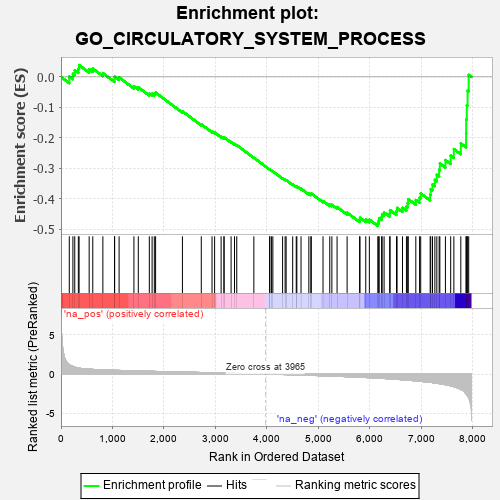
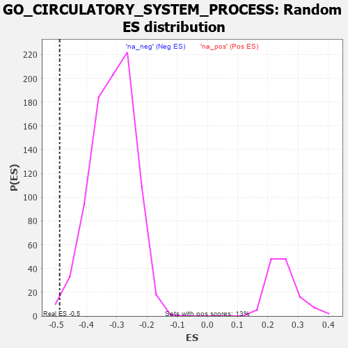

| | | Dataset | 7d |
| Phenotype | NoPhenotypeAvailable |
| Upregulated in class | na_neg |
| GeneSet | GO_CIRCULATORY_SYSTEM_PROCESS |
| Enrichment Score (ES) | -0.48888382 |
| Normalized Enrichment Score (NES) | -1.5620476 |
| Nominal p-value | 0.005720824 |
| FDR q-value | 0.12582275 |
| FWER p-Value | 1.0 |
Table: GSEA Results Summary

Fig 1: Enrichment plot: GO_CIRCULATORY_SYSTEM_PROCESS
Profile of the Running ES Score & Positions of GeneSet Members on the Rank Ordered List
| PROBE | GENE SYMBOL | GENE_TITLE | RANK IN GENE LIST | RANK METRIC SCORE | RUNNING ES | CORE ENRICHMENT | | 1 | CSRP3 | | | 161 | 1.186 | 0.0012 | No |
| 2 | SMAD5 | | | 231 | 0.979 | 0.0103 | No |
| 3 | TBX20 | | | 267 | 0.880 | 0.0219 | No |
| 4 | DLL1 | | | 337 | 0.760 | 0.0270 | No |
| 5 | GSK3A | | | 351 | 0.745 | 0.0389 | No |
| 6 | BRS3 | | | 547 | 0.614 | 0.0253 | No |
| 7 | KCND2 | | | 617 | 0.590 | 0.0273 | No |
| 8 | GLRX3 | | | 813 | 0.529 | 0.0123 | No |
| 9 | AKT1 | | | 1040 | 0.476 | -0.0077 | No |
| 10 | YAP1 | | | 1041 | 0.475 | 0.0009 | No |
| 11 | SRC | | | 1128 | 0.459 | -0.0016 | No |
| 12 | P2RY1 | | | 1416 | 0.407 | -0.0306 | No |
| 13 | E2F4 | | | 1501 | 0.390 | -0.0341 | No |
| 14 | PLOD3 | | | 1715 | 0.353 | -0.0547 | No |
| 15 | LRP5 | | | 1769 | 0.342 | -0.0552 | No |
| 16 | ABR | | | 1812 | 0.335 | -0.0544 | No |
| 17 | GATA4 | | | 1837 | 0.330 | -0.0514 | No |
| 18 | RNLS | | | 2358 | 0.252 | -0.1127 | No |
| 19 | SLIT2 | | | 2724 | 0.195 | -0.1555 | No |
| 20 | TAZ | | | 2933 | 0.161 | -0.1789 | No |
| 21 | PCSK5 | | | 2983 | 0.152 | -0.1824 | No |
| 22 | GPX1 | | | 3109 | 0.135 | -0.1957 | No |
| 23 | PPCS | | | 3165 | 0.127 | -0.2004 | No |
| 24 | GCH1 | | | 3166 | 0.127 | -0.1981 | No |
| 25 | SMAD3 | | | 3303 | 0.105 | -0.2134 | No |
| 26 | SMAD7 | | | 3369 | 0.093 | -0.2199 | No |
| 27 | KCNK1 | | | 3413 | 0.088 | -0.2238 | No |
| 28 | HTR1B | | | 3745 | 0.035 | -0.2651 | No |
| 29 | ATG5 | | | 4051 | -0.016 | -0.3035 | No |
| 30 | DDAH1 | | | 4056 | -0.016 | -0.3037 | No |
| 31 | PDE4B | | | 4089 | -0.022 | -0.3074 | No |
| 32 | MTOR | | | 4114 | -0.025 | -0.3100 | No |
| 33 | TBX2 | | | 4303 | -0.060 | -0.3327 | No |
| 34 | ADRB2 | | | 4352 | -0.068 | -0.3375 | No |
| 35 | GRIP2 | | | 4372 | -0.071 | -0.3386 | No |
| 36 | MEF2A | | | 4499 | -0.095 | -0.3529 | No |
| 37 | NISCH | | | 4568 | -0.109 | -0.3595 | No |
| 38 | CMA1 | | | 4580 | -0.114 | -0.3588 | No |
| 39 | ITPR1 | | | 4661 | -0.130 | -0.3666 | No |
| 40 | P2RX4 | | | 4813 | -0.161 | -0.3828 | No |
| 41 | SGK1 | | | 4852 | -0.168 | -0.3846 | No |
| 42 | DLG1 | | | 4860 | -0.169 | -0.3824 | No |
| 43 | DRD2 | | | 5088 | -0.221 | -0.4071 | No |
| 44 | GPR4 | | | 5219 | -0.250 | -0.4190 | No |
| 45 | SCN1A | | | 5260 | -0.261 | -0.4194 | No |
| 46 | ITPR3 | | | 5361 | -0.288 | -0.4268 | No |
| 47 | ABCG2 | | | 5556 | -0.335 | -0.4453 | No |
| 48 | ADA | | | 5798 | -0.405 | -0.4685 | No |
| 49 | BBS4 | | | 5806 | -0.407 | -0.4619 | No |
| 50 | KCNQ1 | | | 5918 | -0.441 | -0.4680 | No |
| 51 | KCNH6 | | | 5988 | -0.467 | -0.4682 | No |
| 52 | ROCK1 | | | 6152 | -0.520 | -0.4794 | Yes |
| 53 | STIM1 | | | 6169 | -0.528 | -0.4718 | Yes |
| 54 | THRB | | | 6178 | -0.531 | -0.4632 | Yes |
| 55 | TPM1 | | | 6226 | -0.545 | -0.4592 | Yes |
| 56 | CDC42 | | | 6236 | -0.548 | -0.4503 | Yes |
| 57 | STK39 | | | 6274 | -0.563 | -0.4448 | Yes |
| 58 | BBS2 | | | 6383 | -0.608 | -0.4474 | Yes |
| 59 | TRPM4 | | | 6390 | -0.612 | -0.4370 | Yes |
| 60 | TRPV4 | | | 6515 | -0.668 | -0.4406 | Yes |
| 61 | ACE | | | 6526 | -0.674 | -0.4296 | Yes |
| 62 | WWTR1 | | | 6631 | -0.729 | -0.4295 | Yes |
| 63 | EGFR | | | 6708 | -0.765 | -0.4252 | Yes |
| 64 | NPY1R | | | 6732 | -0.776 | -0.4139 | Yes |
| 65 | NCALD | | | 6743 | -0.781 | -0.4010 | Yes |
| 66 | TRHDE | | | 6890 | -0.861 | -0.4038 | Yes |
| 67 | DNM1L | | | 6963 | -0.913 | -0.3963 | Yes |
| 68 | PDE2A | | | 6985 | -0.927 | -0.3821 | Yes |
| 69 | AR | | | 7169 | -1.046 | -0.3862 | Yes |
| 70 | PTPRJ | | | 7180 | -1.054 | -0.3683 | Yes |
| 71 | ERAP2 | | | 7214 | -1.087 | -0.3527 | Yes |
| 72 | HCN4 | | | 7260 | -1.134 | -0.3377 | Yes |
| 73 | ANK2 | | | 7298 | -1.170 | -0.3211 | Yes |
| 74 | GPD1L | | | 7343 | -1.215 | -0.3045 | Yes |
| 75 | WDR35 | | | 7357 | -1.225 | -0.2839 | Yes |
| 76 | NPY | | | 7465 | -1.356 | -0.2727 | Yes |
| 77 | CALM1 | | | 7567 | -1.499 | -0.2582 | Yes |
| 78 | KCNN2 | | | 7629 | -1.611 | -0.2366 | Yes |
| 79 | PDE4D | | | 7764 | -1.944 | -0.2182 | Yes |
| 80 | ECE1 | | | 7867 | -2.498 | -0.1856 | Yes |
| 81 | CALM3 | | | 7869 | -2.525 | -0.1397 | Yes |
| 82 | FYN | | | 7881 | -2.622 | -0.0933 | Yes |
| 83 | CAV3 | | | 7896 | -2.739 | -0.0452 | Yes |
| 84 | ASIC2 | | | 7917 | -2.995 | 0.0068 | Yes |
Table: GSEA details [plain text format]

Fig 2: GO_CIRCULATORY_SYSTEM_PROCESS: Random ES distribution
Gene set null distribution of ES for GO_CIRCULATORY_SYSTEM_PROCESS